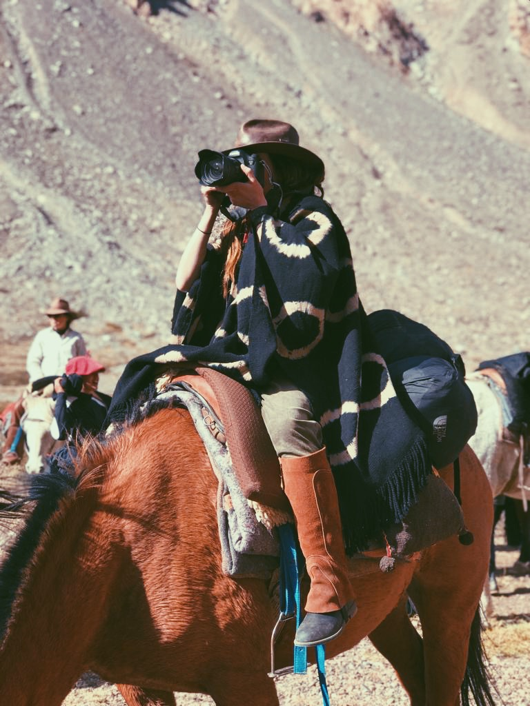
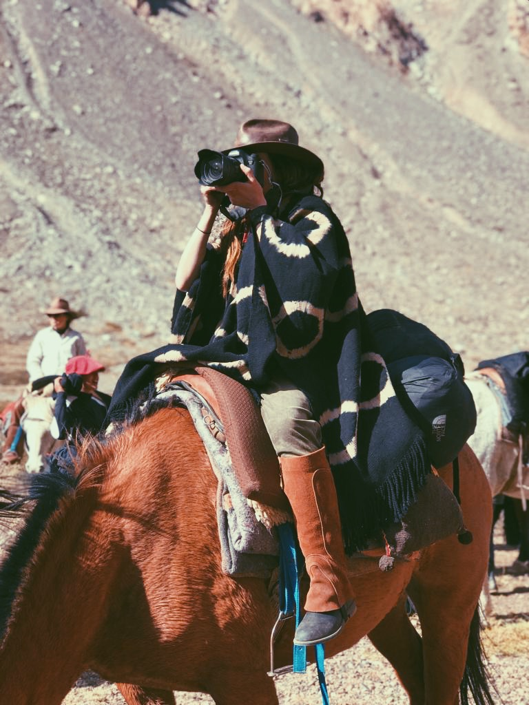

Soy Candelaria Ruiz, Fotógrafa de Buenos Aires.
Mi estilo es la fotografía de naturaleza y documental…mi forma preferida de trabajar es viajando; conociendo nuevos rincones, personas y paisajes que me inspiren a retratarlos y contar una nueva historia con la cámara.
Mi lenguaje es visual, muchas veces lo que no puedo decir con palabras lo puedo expresar en imágenes. Mi obsesión es la luz.
Desde los 14 años que la cámara se convirtió en una extensión de mi brazo.

Una vez terminado el colegio, empece a estudiar comunicación social en la universidad Austral, a la par me fui formando como fotógrafa. Estudié en lugares como Andy Goldstein, Motivarte, Espacio Buenos Aires y cursos de fotografía documental y de moda en Central Saint Martins, Londres. En el año 2016 empece a dictar cursos básicos de fotografía fusionando dos pasiones: enseñar y la fotografía. Descubrí una beta que me permitía conectar con nuevas personas y compartirles este arte que tanto me gusta.
Entre cursos, producciones de fotos y fotografía de eventos encontraba espacio para mis nuevas aventuras, sin duda viajar fue y será mi mejor escuela. Cuando uno está en el campo de acción no solo desarrolla la técnica sino que aprende mucho sobre la vida. Recorrí países como Francia, Italia, España, Africa, Los paises nórdicos, Estados Unidos, Portugal y aún me queda mucho por descubrir.
Siempre me gusto expandir mis horizontes, y me forme en otras áreas como oratoria, antropología y Coaching. Este mix me permite ser mas empática y ampliar mi mirada sobre las cosas.

Las fotografías están impresas en papeles de alta calidad con tintas naturales que garantizan una conservación del color de más de un siglo en condiciones normales de exposición.
fotos de la colección de ediciones limitadas y están inspeccionadas, fechadas, numeradas y firmadas por Candelaria Ruiz. Se proporcionan certificados de autenticidad con cada impresión.
Las impresiones están disponibles en los siguientes tamaños: 65x100cm, 111x165cm, 150x240cm (Si es panorámica, tendría la misma altura pero la longitud variaría)
Para pedidos enviar un correo electrónico a info@candelariaruiz.com
 



.jpg)
.jpeg)